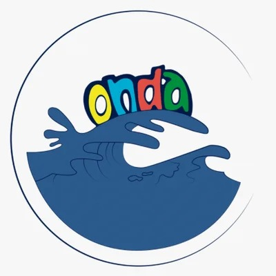
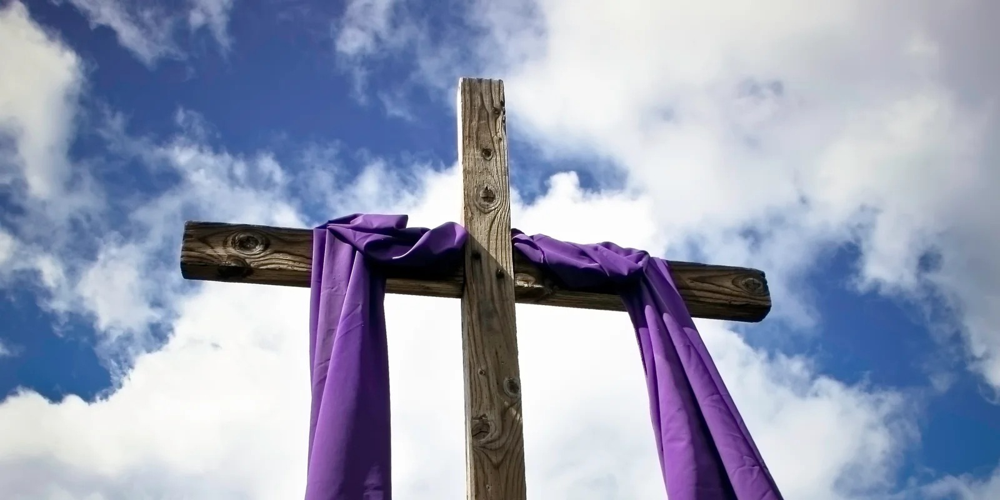
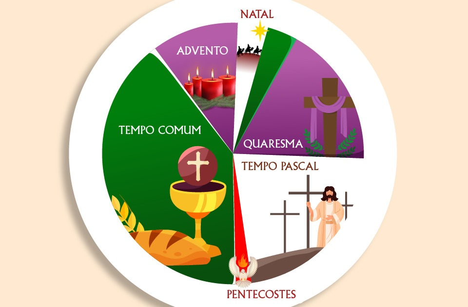
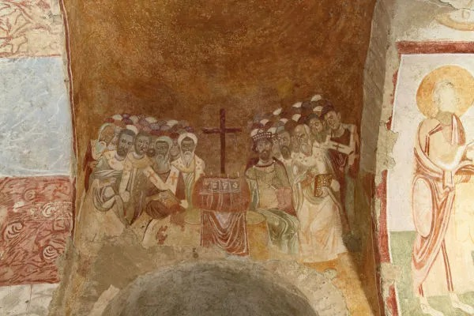
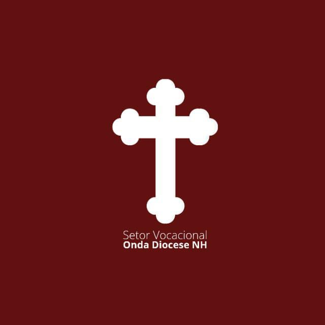

O QUE É A QUARESMA?
Organizado por: Josué Frauzino Vital de Souza, Murilo Martins das Chagas e Guilherme Oliveira dos SantosO que você vai encontrar neste encontro?
Introdução a Quaresma...

De maneira resumida, a Quaresma é um tempo litúrgico que nos conduz ao coração do mistério cristão: a Páscoa.
Por cerca de quarenta dias, a igreja nos convida a trilhar um caminho de conversão e penitência, marcado pela ORAÇÃO, pelo JEJUM e pela ESMOLA, para assim, compreender melhor e se preparar o coração para unir-se ao mistério da paixão, morte e ressurreição de Cristo na cruz.
Pensem nela como se fosse uma floresta cheia de aprendizados, desafios e reflexões que, guiada pela igreja, nos ensina e nos converte ao caminho de Deus a procura de uma caverna marcada em um mapa (Semana santa => Tríduo Pascal) e que dentro dela buscamos algo marcado pelo X do mapa, um tesouro glorioso, recompensador e salvador (Tríduo Pascal: Sacrifício, morte e ressurreição de Cristo).
Mas o que é um tempo litúrgico?

A Quaresma é o que chamamos de “tempo litúrgico” pois ele é um período de tempo que está inserido dentro do ano litúrgico da igreja católica, que é o ciclo em que a igreja celebra todos os feitos salvíficos operados por Deus em Jesus Cristo, sendo dividido em A, B e C, para organizar a sequência de leituras bíblicas, que se repetem a cada três anos.
A igreja propõe essa organização de ano e tempos para que os fiéis tenham clareza do momento litúrgico em que ela está, entrem na dinâmica salvífica do mistério pascal e, assim, vivam e celebrem bem a santa missa. Assim diz o catecismo da igreja católica:
“A santa mãe Igreja julga seu dever celebrar com piedosa recordação, em certos dias fixos no decurso do ano, a obra salvífica de seu divino esposo. Em cada semana, no dia que ela passou a chamar ‘dia do Senhor’, recorda a ressurreição do Senhor, celebrando-a uma vez por ano, juntamente com sua sagrada paixão, na solenidade máxima da Páscoa. E desdobra todo o mistério de Cristo durante o ciclo do ano [...]. Recordando assim os mistérios da Redenção, franqueia (dar acesso) aos fiéis às riquezas das virtudes e dos méritos de seu Senhor, de maneira a torná-los como que presentes o tempo todo, para que os fiéis entrem em contato com eles e sejam repletos da graça da salvação” (CIC, n. 1.163, p. 327).
São cinco os tempos litúrgicos, cada um com suas datas, celebrações e particularidades:
- Tempo do Advento
- Tempo do Natal
- Tempo da Quaresma
- Tempo da Páscoa
- Tempo Comum
Isso sem falar das festas e solenidades que estão dentro do tempo litúrgico.
Portanto, um tempo litúrgico contém as datas e celebrações específicas do tempo, da meditação que a igreja está e explicar os acontecimentos da história da salvação através das reflexões e ensinamentos por elas geradas.
Origem da Quaresma

A Quaresma tem sua origem nos primeiros séculos do Cristianismo, quando a Igreja instituiu um tempo de penitência e preparação para a Páscoa, inspirado nos quarenta dias de jejum de Cristo no deserto, quarenta anos de caminhada do povo hebreu, pedido de conversão de Jonas ao povo de Nínive e etc.(número 40 tem grande importância na liturgia bíblica e QUAResma). Inicialmente, foi um período de intensa formação para os catecúmenos (pessoas em fase de instrução e preparação para receber o batismo ou se tornarem membros formais de uma igreja cristã) que seriam batizados na Vigília Pascal, mas logo tornou-se um chamado universal à conversão para todos os fiéis.
Ao longo da história, a Igreja consolidou a Quaresma como um itinerário espiritual em que cada cristão é convidado a voltar-se para Deus com um coração arrependido e disposto à conversão. Por isso, o chamado à conversão é insistentemente repetido nesse tempo como um convite concreto a reorientar a nossa vida segundo os ensinamentos do próprio Cristo.
Como a quaresma se encaixa no vocacional?

A quaresma é um convite à conversão, e nós do vocacional, de começo, mas de maneira duradoura e perseverante, queremos implementar esse espírito da quaresma em vocês, pois o convite pra morrer pro pecado e viver em Deus por meio de Cristo é algo que vocês devem lembrar e carregar com vocês por todos os dias de suas vidas.
Vocação é, antes de tudo, chamado, e esse chamado nos dá um caminho, direção, completude, sentido, propósito, corresponder, servir e etc. Vocês, como pessoas racionais, com dons e significado, devem buscar uma vida e caminho verdadeiros, de vida, alinhados com a vontade de Deus. O setor vocacional, o ONDA como movimento e a igreja estão aqui para relembrar, ensinar e guiar vocês ao chamado que, indiretamente, estão dentro das almas e corações de vocês.
Nosso dever é, em todas as vidas de vocês, desenvolver e fazer vocês se lembrarem do compromisso diário que vocês têm com Deus, seja no trabalho, escola, igreja, lar e futuramente, se possível e decidido com discernimento, alguma vocação sacramental como matrimônio ou ordem. (Esposo, esposa, padre, frei, freira, diácono, irmã…)
Para viver bem uma vocação, precisa doar-se para Deus. Jesus, em sua vida privada e pública, viveu isso de maneira perfeita e intensamente, e depois de doar esse seu lado perfeito na cruz para nos dar vida, nos convida a fazer o mesmo, pois nele se encontra todo o discernimento e necessidades que precisamos viver para alcançar o céu, através do perdão e da vivência da vocação.
Fontes e referências
- Quaresma: um guia completo para católicos
- A Igreja e seus tempos litúrgicos
- Como é dividido o ano litúrgico
- Como viver bem a quaresma em 5 dicas práticas
- Como Viver a Quaresma: Um Guia Completo para uma Vivência Espiritual Profunda (Imagem da Cruz com faixa roxa)
- Linktree ONDA (Imagem do logo do ONDA)
- Facebook ONDA Feitoria (Imagem do logo do ONDA Feitoria)
- A Igreja e seus tempos litúrgicos (Imagem do ano litúrgico separado de maneira simples)
- Quaresma (Imagem do Concilio de Nicéia origem da quaresma)